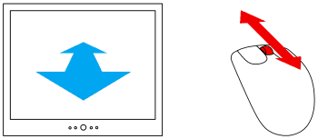
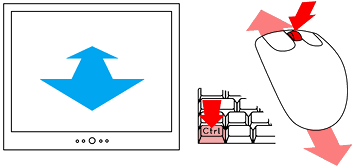
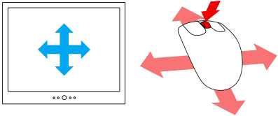
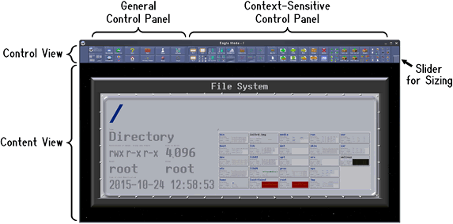

Eagle Mode -
General User Guide
Copyright © 2008,2010-2011 Oliver Hamann.
Homepage: http://eaglemode.sourceforge.net/
Contents
1 Introduction
2 Navigation
2.1 Mouse functions
2.2 Keyboard functions
3 Elements of the user interface
3.1 Windows, views and panels
3.2 Keyboard focus
3.3 Popup-zoom
3.4 Content view and control view
4 Finding more help
5 When Eagle Mode hangs
1 Introduction
Eagle Mode is a zoomable user interface with many plugin applications. This
documents describes its general usage and gives hints where to find further
help.
2 Navigation
This chapter describes how you can navigate through the panels of a view in
Eagle Mode.
2.1 Mouse functions
Zooming by mouse wheel
For zooming in, move the mouse pointer to the location where you want to zoom
in, and then push the mouse wheel upwards. For zooming out, push the wheel
downwards.

Tips:
- For a slower zooming, hold the Shift key or the middle mouse button
while pushing the wheel.
- By zooming in and out with different mouse positions, you can
simulate a scrolling.
- If you want to zoom into a panel which is, for example, on the right
side of the view, then you should position the mouse pointer near the
right edge of that panel. Thereby, and with some practice, you can get
the panel somewhat centered when you zoom in.
Zooming by mouse movement
For zooming by mouse movement, press and hold the Ctrl key and the middle mouse
button, and move the mouse vertically. (With most mice, wheel and middle button
are the same unit)

Tips:
- The initial mouse position is like with zooming by wheel.
- Hold the Shift key for a slower zooming.
Scrolling by mouse movement
For scrolling, press and hold the middle mouse button, and move the mouse into
the desired scroll direction.

Tips:
- Hold the Shift key for a slower scrolling.
- The preferences provide an option for reversing the direction of
scrolling in relation to the direction of moving the mouse. (The
preferences are in the general control panel near the upper left corner
of the Eagle Mode window)
Showing a panel full-sized, by mouse
For showing a panel full-sized so that it fits into the view, double-click with
the middle mouse button on the panel. And for showing a panel full-sized so that
the view is completely utilized, triple-click or shift-double-click with the
middle mouse button on the panel.
With some panel types, this function depends on the size and layout of the panel
contents. Then it is a good idea to repeat the function after the panel has
loaded or changed.

2.2 Keyboard functions
| Key |
Effect |
| Alt+Cursor-Key |
Scrolling |
| Shift+Alt+Cursor-Key |
Slow scrolling |
| Alt+Page-Up/Down |
Zooming |
| Shift+Alt+Page-Up/Down |
Slow zooming |
| Alt+Home |
Show the focused panel full-sized so that it fits into the view. |
| Shift+Alt+Home |
Show the focused panel full-sized so that the view is completely utilized. |
| Cursor-Key |
Move focus to a sister panel in the desired direction. |
| Page-Up |
Move focus to first child panel. |
| Page-Down |
Move focus to parent panel. |
| Tab or Shift+Tab |
Move focus to next or previous panel. |
| Home or End |
Move focus to first or last panel. |
| Escape |
Switch focus between content view and control view, and pop
the control view up or down, respectively. This hotkey is useful
especially when having the control view minimized by the
slider. |
3 Elements of the user interface
3.1 Windows, views and panels
In Eagle Mode, the user interface is made of windows, views and panels. A window
is such a thing on the desktop that has a title bar, a border and a content
area. The content area of a window is made of one or more views. Such a view
shows something like a two-dimensional virtual world which can be zoomed and
scrolled. Such a "world" consists of panels. A panel can be a simple things like
a button or an input field, or it can be a more complex thing like a group or a
plugin application. Each panel can have child panels which are making up more
details. This relationship of parents and children is also called a tree of
panels. Thus, each view shows a tree of panels.
3.2 Keyboard focus
There is always at most one panel on the screen which has the (keyboard) focus.
Any keyboard input goes to that focused panel. The focus is shown by small
arrows which surround the panel and point to it. There are several ways to move
the focus to another panel. One is to zoom into the desired panel, another is to
click on it. Further ways are described in the "Navigation" chapter.
Views and windows can also be focused: The focused panel is always in the
focused view, and the focused view is always in the focused window.
The focused panel is even called the active panel of a view. It remains active
even when the view and the panel are losing the focus. In that state, the active
panel is still indicated by arrows, but more pale. As soon as the view is
focused again, its active panel is automatically focused too.
3.3 Popup-zoom
Some views have the popup-zoom feature. It means that when you zoom in, the view
pops up and gets larger so that it is clipped by the screen bounds only. This
makes small views much more comfortable, but it is suitable only for certain
views like the control view (see more below) and dialog windows.
Similar to a classic popup menu, a popup-zoomed view automatically pops down
when you click outside, or when you trigger a button in it. Not all buttons have
that effect, but most of them. If you want to trigger a button without popping
the view down, hold the Shift key while triggering the button.
3.4 Content view and control view
The main window of Eagle Mode has two views: a large content view at the bottom
and a small control view at the top. The content view is for the things you are
working on, and the control view is for commands, status information, settings
and similar things. One could say the control view is a replacement for classic
menu bars, tool bars and status bars. It has the popup-zoom feature.

There is a slider for sizing the control view. You can drag it up and down with
the left mouse button. A double click on it minimizes or unminimizes the control
view.
The control view itself is divided into two parts. On the left is a general
control panel which always stays the same. And on the right is a
context-sensitive control panel. This means, the right control panel depends on
what is activated (focused) in the content view. Just navigate around in the
content view and see how the right part of the control view changes. Note that
some content panels do not provide any control panel, and so they leave the
right side of the control view empty.
Hint: Many buttons of the control panels can be triggered by entering hotkeys.
These hotkeys are functioning only when a panel in the content view is focused,
and not in the control view.
4 Finding more help
Many help texts can be found directly in the panels they are describing - just
zoom in! Toolkit panels like buttons, input fields and groups often have a
description right below their caption. In addition, interactive toolkit panels
like buttons and input fields have general help texts ("How to use this panel")
very small in the center of the left edge of the border. For example, a text
input field describes all its functions there.
The file manager is described in another document: emFileMan User Guide
The games SilChess, emMines, and emNetwalk are showing help texts in their
control panels.
5 When Eagle Mode hangs
Sometimes Eagle Mode may hang for a short time. This could happen when zooming
into a slow medium like a floppy disk, or when zooming into a disk that has to
be woken up from a sleep state. Another reason could be that the operating
system is busy in executing disk write operations which have been cached some
time before.
If it actually happens that Eagle Mode hangs and you feel that it does not
respond to input, do not give wild input. Just wait - Eagle Mode will respond to
the last input as soon as it gets active again.
If you think Eagle Mode hangs forever and you are in a fullscreen mode and you
don't know how to come out, then you could try the following key combinations in
that order: Alt+F4 (close window), Alt+Tab (switch to another window),
Ctrl+Alt+Backspace (kill the X-Server and all windows), Ctrl+Alt+Del (soft reset
- kills everything). If all that does not help, you may have to hard reset the
computer, but note that this could mean some damage to the file system (don't do
it before there is no disk activity for a long time).